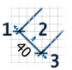

|
A m�retvonalak helyzet�t �s m�ret�t az eg�rrel tudja m�dos�tani.
M�retvonalak m�dos�t�s�hoz el�sz�r jel�lje ki �ket az Alaprajz n�zetben. Egy
m�retvonal kijel�l�s�hez, kattintson r�. T�bb m�retvonal (vagy egy�b objektum)
kiv�laszt�s�hoz, rajzoljon k�r�j�k egy t�glalapot, vagy kattintson r�juk, mik�zben a
Shift billenty�t nyomva tartja.
A kiv�lasztott m�retvonalak mozgat�s�hoz vigye az eg�rmutat�t az egyik kiv�lasztott
m�retvonalra, majd h�zza arr�bb, vagy haszn�lja a kurzornyilakat.
Ha egy m�retvonalat jel�lt ki :
-
elmozgathatja a kezd�- �s v�gpontjait a m�retindik�torral, ami a k�t sz�l�n jelenik
meg,
-
m�dos�thatja a m�retseg�dvonalai hossz�t, a vonal k�zep�n megjelen�
m�retseg�dvonal-indik�torral.

|